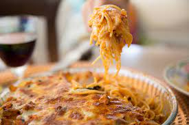

Baked Spaghetti

Description:
This is a wonderful chicken recipe that kids and adults love. To make ahead of time, leave off the cheese and refrigerate. Then bake for 20 minutes to heat, add the cheese and bake for 10 more minutes.
Ingredients:
- 3 tablespoons olive oil
- 2 bay leaves
- 1 ½ tablespoons Italian seasoning
- 1 teaspoon chopped garlic
- salt and pepper to taste
- 4 skinless, boneless chicken breast halves
- 1 green bell pepper, chopped
- ½ onion, chopped
- 1 head broccoli, cut into florets
- 8 fresh mushrooms, sliced
- 1 pound uncooked spaghetti
- 5 ounces shredded Colby-Monterey Jack cheese
- 1 (16 ounce) jar spaghetti sauce, or more to taste
Steps:
- In shallow non-aluminum dish or resealable plastic bag, combine olive oil, bay leaves, Italian seasoning, garlic, salt, and pepper. Poke holes in chicken breasts and add to olive oil mixture. Marinate in refrigerator for 1 to 2 hours.
- Preheat oven to 375 degrees F (190 degrees C). Remove chicken from refrigerator and cut into half-inch pieces. Cook in large skillet, with marinade, until chicken is light brown and sauce is bubbly. Remove bay leaves. Stir pepper, onion, broccoli, and mushrooms into skillet and allow to simmer until tender, about 5 minutes.
- While vegetables are cooking, bring a large pot of lightly salted water to a boil. Add pasta and cook for 8 to 10 minutes or until al dente; drain. Return pasta to pot and add chicken mixture and spaghetti sauce. Stir. Pour mixture into 9x13 inch pan. Top with shredded cheese.
- Bake in preheated oven for 20 minutes, or until cheese is melted. Serve.